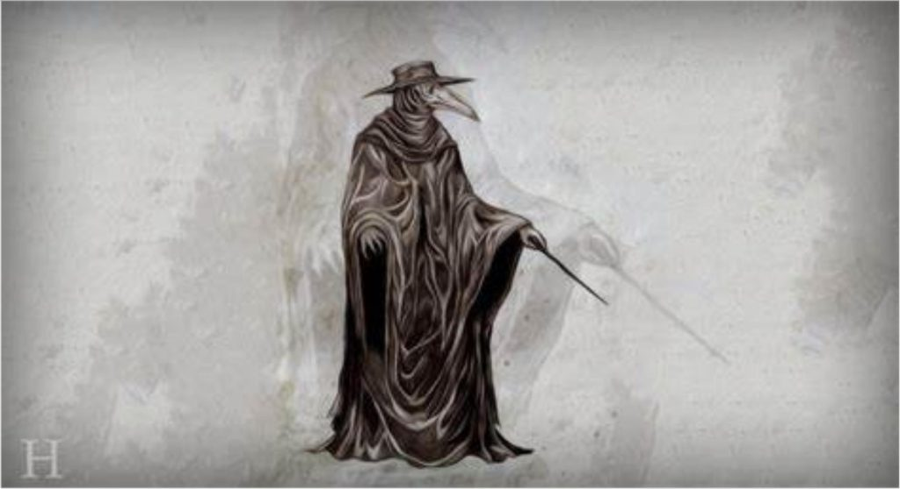

The following is the twelfth part from a series of articles describing the adventure that a follower who goes by the handle "daegonmagus" has experienced since reading MM. They are very interesting and fascinating. I hope that you all learn from his journey and maybe learn a thing or two as he relates his unique experiences to the readership here. -MM
Part 12 – Miscellaneous Experiences: The Curious case of the Mysterious Chicken Bird
Yeah, yeah I know….I am supposed to be teaching you guys about LD so we can all meet in the non physical planes and kick some Old Empire ass before sitting down to smoke a fat Cuban, or whatever the equivalent is over there. But, I’ve got get this thing off my chest, because, well, it has been weird even for me. Plus it involves my family, so….
A week or so ago I posted on one of the forum threads about a strange little chicken bird that decided to visit my daughter in her room at 2am and scare the living shit out of her and my wife, before seemingly disappearing into “fat” air. And yes, that is a Simpsons reference.
Well, allow me to give you an update, the chicken bird came back, and it has been here before that visit with my daughter…apparently.
I tried talking about this on a site apparently all for paranormal stories and got labelled batshit crazy, an attention seeker yada yada yada. So I figured I’d do an article about it and put it up on here, my safe zone.
Like MM, I’ve got better shit to do than write about my experiences and have douschebags call me crazy.
Like MM, its that incessant voice in the back of my head that tells me it is necessary so people know there most definitely is a connection with lucid dreaming and ETs.
Maybe afterwards I’ll curl up into the fetal position and spoon the computer with MM open whilst eating directly out of a Milo tin with a soup ladle as I try to suppress all the psychological damage those people’s opinions did to me. I haven’t decided yet. That’s sarcasm by the way. But just in case she is reading, fuck you Maria. I can handle being called nuts, I can handle being called a liar, I can handle being called an attention seeker but if you are going to bring my family into it, then, seriously, fuck you. You government approved robotic troll.
The least you can do is read my autobiography before jumping to such conclusions.
For those who don’t know, Milo is a chocolate malt drink we get here in Oz.
As a kid, the common rule is that you fill up a tumbler glass with the chocolatey maltey goodness and pour about an inch worth of milk at the top, then high tail it the fuck out of the kitchen before a parent walks in and catches you in the middle of your diabolical scheme.
The punishment for being caught is usually pretty serious; your mum doesn’t buy Milo next time she gets the groceries.
Don’t even get me started on what happens when you steal dad’s salami that has been sitting in the back of the fridge untouched for 2 weeks.
Anyway back to the weirdness, and I want to back up a bit, because strange things have been happening here since even before this Chicken bird showed up.
For anyone familiar with my story, you may have noted such strange happenings have been following me and my wife, SD, our whole lives. Usually these are seemingly random events dispersed over many months. These last few weeks have been an exception. The year itself has been particularly interesting for me. Scratch that; for us.
You may recall back in Jan I had what appeared to be a doppelganger banging on my door and calling out to my wife and daughter when I was out with my son.
What happened was that my wife went to open the door and let this thing in, then noticed that despite it wearing my exact usual clothing, it was sporting a different haircut to what I went out the door with about 10 minutes prior.
She said “fuck that”, locked the door and then watched it walk behind the curtain and seemingly disappear. We have a dog fence surrounding that side of the house that would have slowed its departure somewhat, but nope, this thing was gone as soon as she pulled the curtain back. This was soon after something had been calling out to my daughter in my voice; my daughter said “dad’s home” and went to go find me before my wife stopped her, thankfully. I suspect this thing, whatever the fuck it was, had a hand – pun intended – in almost getting me killed some 8 years ago.
This caused me to finally pull my finger out of my butt, risk hearing a noise that sounded very much like Maria’s opinion, and write about all the things I experienced in LD before this thing got me killed.
It’s been a rollercoaster ride ever since.
Oh and in case I forgot to mention, our house has weird things happening in it all the time. Like shadow people walking around that you catch out of the corner of your eye, or – like what happened to me last night – random heavy weights weighing more than my 100kg body mass just randomly deciding “jump on me” and wake me up. Waking up after strange LD sessions with helicopters directly over our house.
Fast forward to a couple of weeks before MM’s comms channel opened up with the Domain Commander. My wife had a lucid dream/ astral projection experience she and a bunch of others were working in a lab section of a ship with several tall, extremely muscly blue eye blonde beings who were making some kind of medicine to cure some sort of sickness. Don’t be fooled though, these guys weren’t Nordics – they had short hair. The next day she caught a glimpse of their ship hovering high above our house.
A week later she caught yet another glimpse of something parked in our driveway before a bunch of honeycombed shaped mirrors appeared around it and cloaked it into oblivion. Unlike the shadow people, she assured me this was a proper physical sighting and not just one born from channeling into the non physical.
She saw this thing in our goddamned fucking driveway.
So I decided to set up a hunting camera facing not 2m away from where she said it was. Not that I caught much apart from some random digital noise.
Then, a few days later came Mr chicken bird.
Our 2 year old son was incredibly sick with diarrhoea and power spewing all night. Our 4 year old daughter had been worried about him so we let her sleep in our room. We put her in his cot and had him in our bed, where he usually sleeps anyway.
Our 2 year old woke everyone up at 2am screaming from his sickness.
My daughter, after being woken up started getting silly and wouldn’t go back to sleep, so I took her into her own room and gave her some cuddles while my wife nursed our son. I couldn’t stay too long because our boy was just too sick, so after a couple minutes I went back to our room, whilst my daughter was still wide awake.
Not 2 minutes later, we hear her saying “get out of here you naughty little thing”. She says something similar to our eldest boy when he harasses her when they play, so we thought he had woken up and gone in her room and was annoying her.
My wife gave our sick son to me and went to investigate.
Our daughter’s room is right next to ours to the right as you come out our door. As soon as she reached the door to my daughter’s room, I heard her say “what the fuck”. The next thing I know she is pulling my daughter into our room and trying to get our eldest son (still asleep) out of his bed and into our room in a mad panic.
As she got to the door she noticed our daughter with tears streaming her face, standing on her bed trying to get away from something that was standing next to the bed using it to balance, and walking very slowly towards her – both my wife and daughter saw this.
My wife said it was hard to make out in the dim lighting of the room, but it was very definitely a physical “thing” with wings about 3ft tall. Our daughter said it looked like a black and white chicken bird. She said she saw a “plane” drop it off outside her window before it came in the house. It took us quite awhile to calm her down (she ended up sleeping in our bed).
As if this wasn’t enough the son of a bitch showed up again a few nights ago around the same time of night; my wife got up to go to the toilet and said this same thing just appeared in the doorway walking towards her like it had done to my daughter, using its wings to try and balance.
She stared at it for a good while as she sat on the toilet before getting up and walking straight through it, to which it just dissipated.
She didn’t feel anything as she did so. She said it’s beak reminded her of those medieval plague doctors that used to wear those bird masks back in the renaissance period.

Plague doctor from Renaissance period.
So now, several weeks have passed and our girl won’t sleep back in her room. She is that terrified of the chicken bird, she won’t even go in there to play. What the fuck is this thing?
Note the correlation to medicine on the ship SD was on, and the plague doctor who used to put herbs in the mask to rid themselves of the smell of the dead they worked near.
The medicine SD was working on with the short haired blonde guys was also herbal/ natural based. Are the things visiting my family responsible for the depictions of the Plague doctors?
Then some more weird shit happened.
I set up a portable stretcher in our room so my daughter wouldn’t have to sleep in the cot that is much too small for her. She woke up in the middle of the night, again absolutely terrified and comes and crawls into our bed. The thing that scared her?
She saw a bunch of monster “people” appear before her and start talking to her in a strange language.
The description she gave of these people was exactly the same as a bunch of beings that used to harass my wife when she was about the same age. Bald, red eyes etc etc. This was a repetitive experience. They are apparently extremely loud when they talk.
And again, just last night she told us more about them. There are children ones and a “daddy” one. The daddy one usually isn’t there because he has to go to work “stealing other children”. She has seen these loud beings get dropped off along with the chicken bird and “snake looking people” from the same plane.
It gets even better.
So we are sitting in the loungeroom the other night, and out of no where my eldest son says that he has seen the chicken bird before in his sleep. He says that he saw a plane come into the loungeroom, drop it off and then leave through the back door (same one my doppelganger tried to get in through.).
I remember quite awhile ago he had a dream that some beings had taken him out of bed into a waiting spaceship in the driveway, then took him to the moon where they made him touch something silver that turned him silver (hello again Matrix Movie) and made him extremely cold at the same time.
They turned him into a literal fucking Metallicboy, and this was before I had even made the acquaintance of the Metallicman.
It is hard to tell if his were lucid dreams or standard ones, given that kids can’t properly externalise what the fuck is happening to them whilst in these states, though I assume it was an LD judging from his ability to recall it so vividly. My daughter’s seem like a bunch of Lucid Dreams interwoven with physical contact of the chicken bird, backed up by my wife seeing it.
Somewhere in all this cacophony of weirdness I myself had a lucid dream about standing out in the driveway and watching a ship come in to collect me.
The place I was standing would have been right next to where my wife saw her ship and my daughter said the chicken bird ship landed.
In fact it would have been the corner of a right angle if you dotted them out on a map. It was right in the exact spot my son said they took him to the moon. The entirety of our experiences would have been within a 15m radius of each other. That’s four different people from one family who have seen ships, either physical or non physical, in pretty much the exact same spot.
I can’t help but think about my abduction dream – refer to my Part 5 – from my mother in law’s house a few years back which is literally less than 5km away as the crow flies from us.
I was there the other day and took a video of how I remembered that dream experience unfolding (except I came out the door and not from around the side of the house).
When I point to the sky, just imagine a very angular shaped ship coming out of a cloud to the right and sucking me up into a circular arrangement at the bottom followed by a very confusing and disorientated wake up session.
The thing that gets me is that that experience felt like a future occurrence; it was too vivid to be just a standard dream.
I initially wrote it off because in the dream my car (which I no longer own) was very vividly parked in my mother in law’s spot under the garage.
Then I remembered my mother in law was the one I sold that particular car to. So if I randomly go missing it’s a good bet I woke up back in 2016 lol.
Joking aside, SD is under instruction to inform MM if I do indeed go missing one day whilst at my mother in law’s house; that is just a precaution I feel is necessary to take considering the Domain Commanders recent confirmation on our LD experiences. Maybe it will never happen – I honestly have no clue what to expect.
What I do know is that something weird is going on in our household, and it amplified the moment
MM’s comms channel opened up (this is in no way me laying blame on MM for it). Is it the Domain, is it someone else? I have no fucking idea, but it is definitely related if you want my honest opinion.
I showed this to my daughter who said the eyes and beaked looked fairly similar. My wife said if you take away the hat body, pickaxe etc, it looked similar. My son said the one he saw was different, more like a chicken that made a high pitched squeaking noise.
MM comment
Jeeze! Louise!
You can visit the daegonmagus Index here…
MM Articles & Links
You’ll not find any big banners or popups here talking about cookies and privacy notices. There are no ads on this site (aside from the hosting ads – a necessary evil). Functionally and fundamentally, I just don’t make money off of this blog. It is NOT monetized. Finally, I don’t track you because I just don’t care to.
- You can start reading the articles by going HERE.
- You can visit the Index Page HERE to explore by article subject.
- You can also ask the author some questions. You can go HERE to find out how to go about this.
- You can find out more about the author HERE.
- If you have concerns or complaints, you can go HERE.
- If you want to make a donation, you can go HERE.